配置java环境
jdk有很多版本,对教学来说区别甚微
以openjdk17作为java环境
从清华源镜像下载jdk
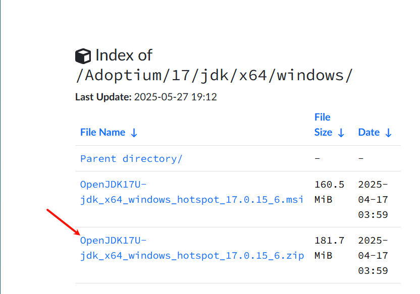
将下载的zip解压,我喜欢用一个目录专门存放开发环境和工具
电脑小白可以去看下windows教程
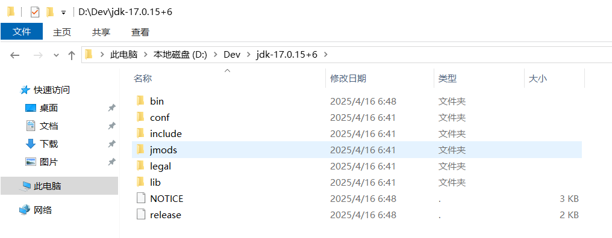
然后win+s搜索环境变量
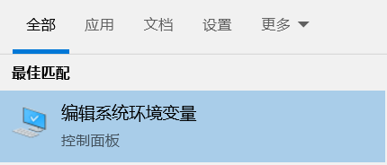
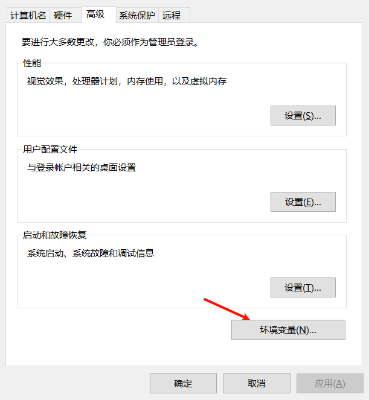
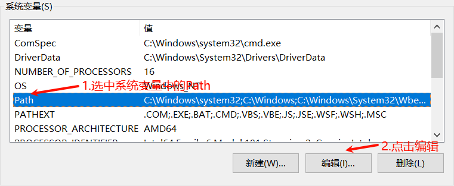
然后将jdk文件夹bin的目录路径拷贝
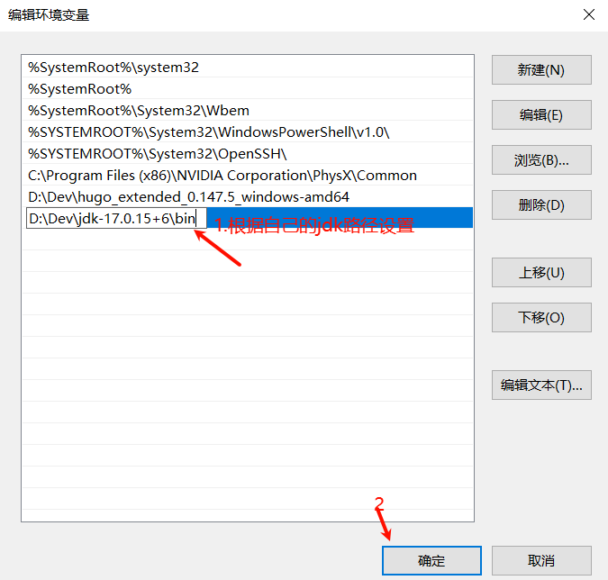
之后必须一直点确定否则环境变量不会设置成功
后面win+r输入cmd
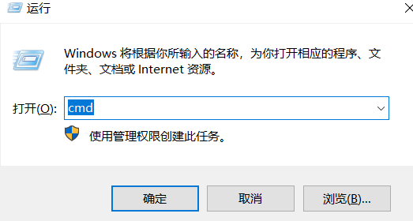
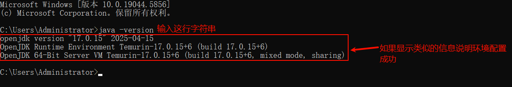
如果没有显示可以重启一次
解释操作
我们大抵做了两个操作
- 我们首先下载解压了openjdk17
- 配置了环境变量
jdk即Java Development Kit(Java软件开发工具包),没有jdk我们就运行不了java代码
环境变量是什么?
举个例子,在中学做有关圆的题目时,往往题目后面有:
(设Π近似为3.14)
所以你就知道了Π=3.14
设置环境变量也就是告诉windows系统设置了一个特殊的值,并且这个值可以是数字,一行文字,但一般是一个文件夹路径
你可以看到系统变量窗口下有很多变量,而我们则是选中Path变量并新增了一个新值,这里必须要注意系统自带的变量大多只有一个值,而某些变量比较特殊可以有多个值,比如我们选中的Path变量,Path变量规定了命令行界面(也就是那个cmd黑窗口,能通过一些指令对系统做些操作)可执行文件(.exe文件之类的)的搜索路径
我们在命令行输入 java -version
实际是系统通过Path变量里我们设置的路径(如D:\Dev\jdk-17.0.15+6\bin)找到了java.exe(在cmd里可以一般省略.exe后缀)这个程序
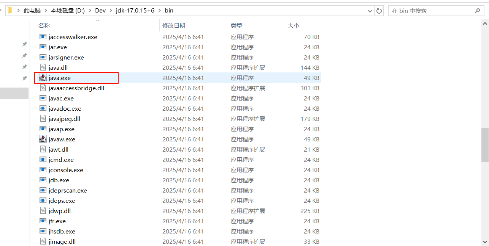
并且执行了java.exe,而 -version 则是对启动java.exe的启动参数(不知道什么意思没关系)
配置编辑器
接下来我们点击链接下载vscode
vscode是一个代码编辑器可以通过安装插件扩展功能
打开安装包在一直下一步到这个界面


然后重启vscode就变成中文了
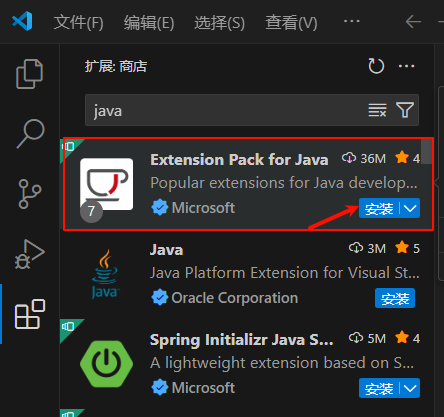
之后搜索java下载这个插件
后面安装下图流程点击并配置vscode的设置
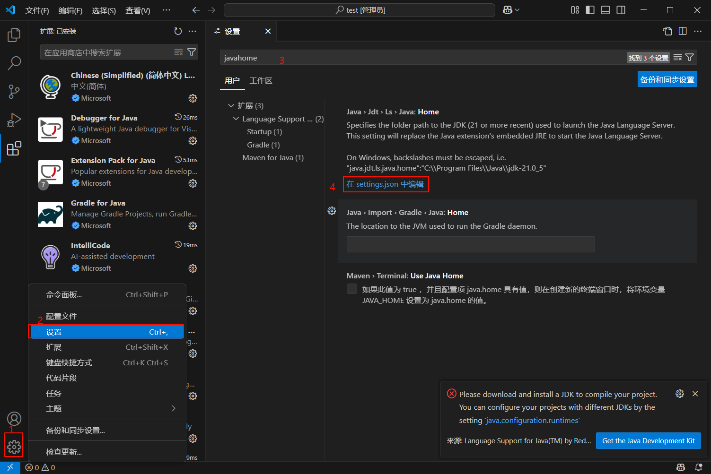
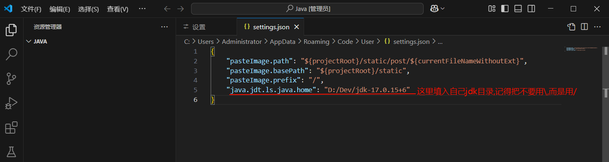
此处配置javahome与先前配置环境变量同理,只不过是为在vscode安装的java扩展包配置jdk路径
记得按crtl+s保存,上方的标签左边如果有小白点说明没保存
我们随意新建一个文件夹,把这个文件夹拖进vscode窗口
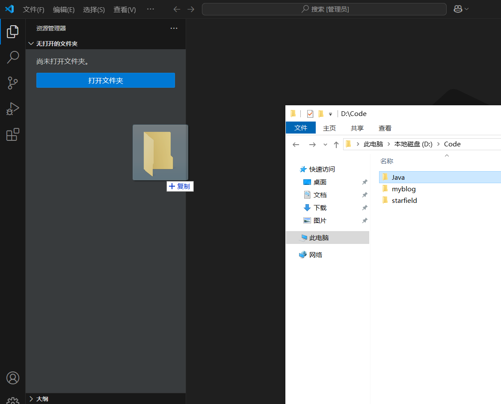
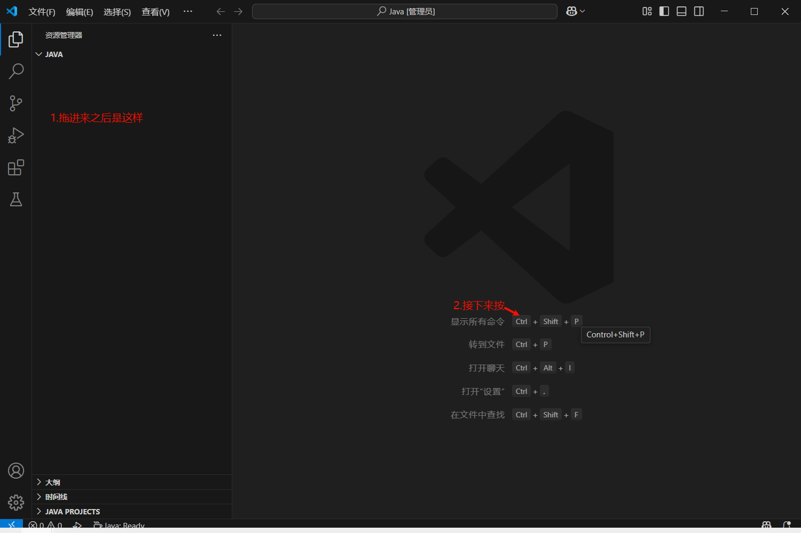
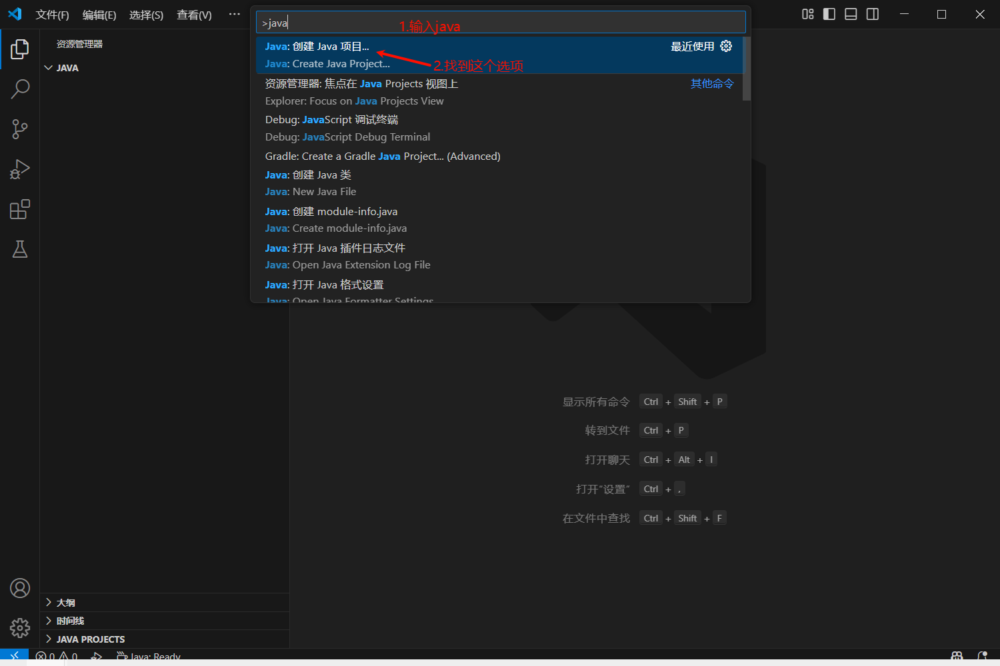
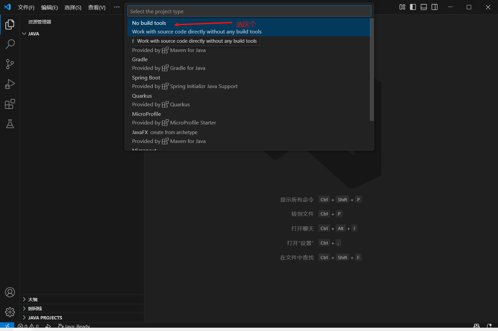
弹出界面直接点这个即可
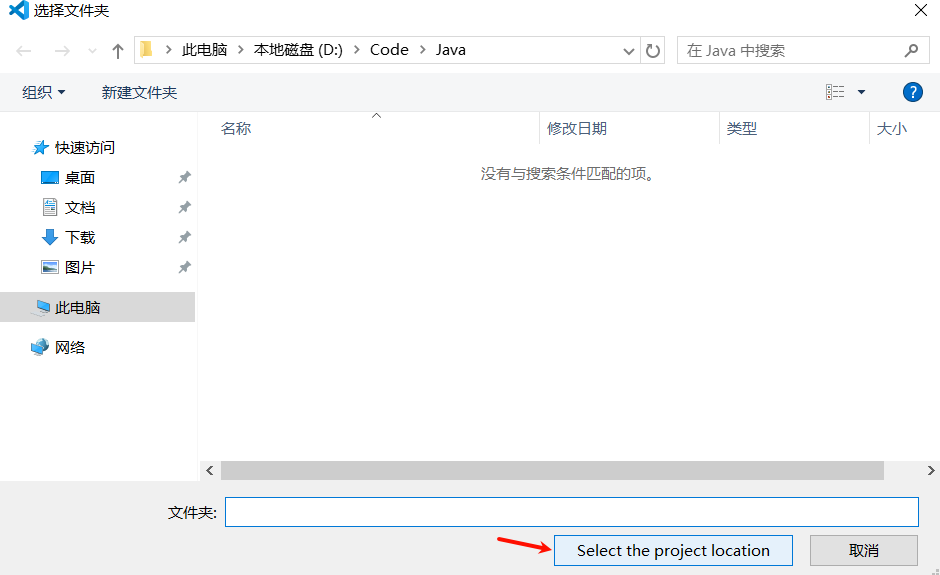
输入项目名字然后按Enter
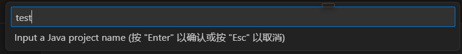
会跳出一个新的vscode窗口
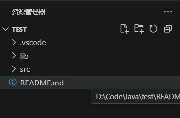
我们不管其他的,直接点开src文件夹再点击App.java
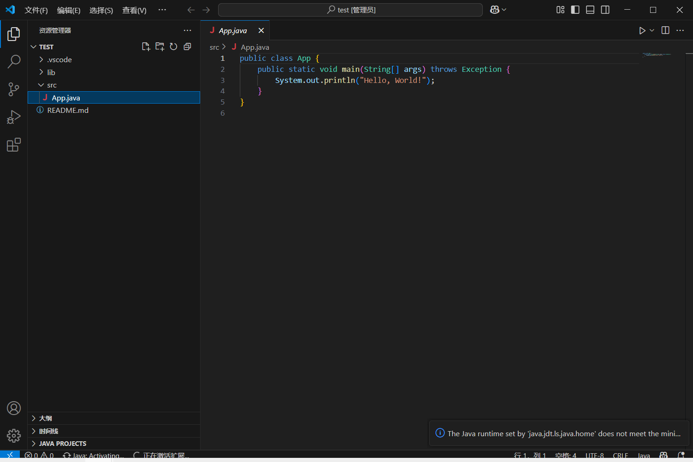
点击右上角的三角,如果下面出现终端并显示了 Hello,World! 说明环境配置成功了,如果没有反应可以试着重新启动vscode,如果右下角出现报错说明前面的步骤出错了
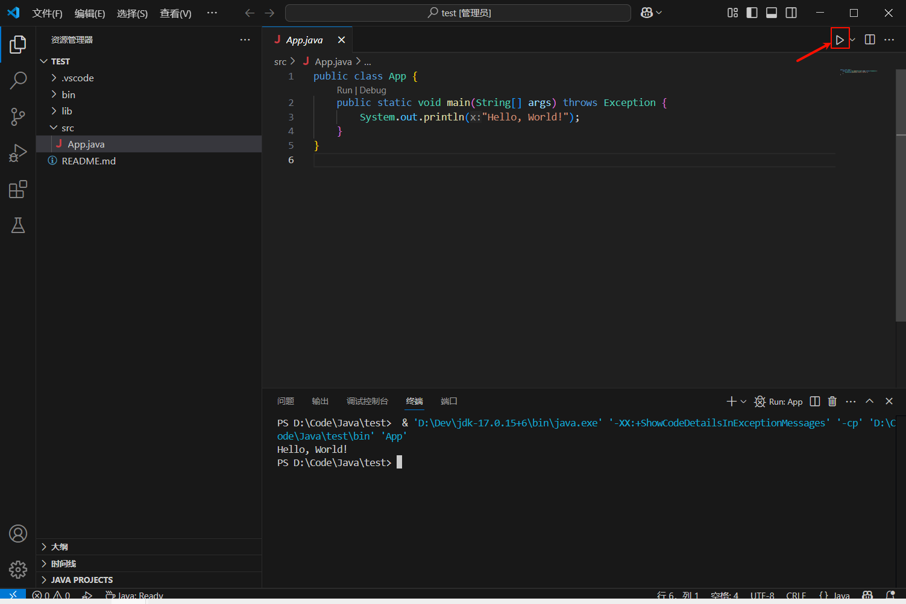
疑难杂症
如果确定步骤没错但还是失败可以试试用更高的jdk版本比如jdk21,点击链接
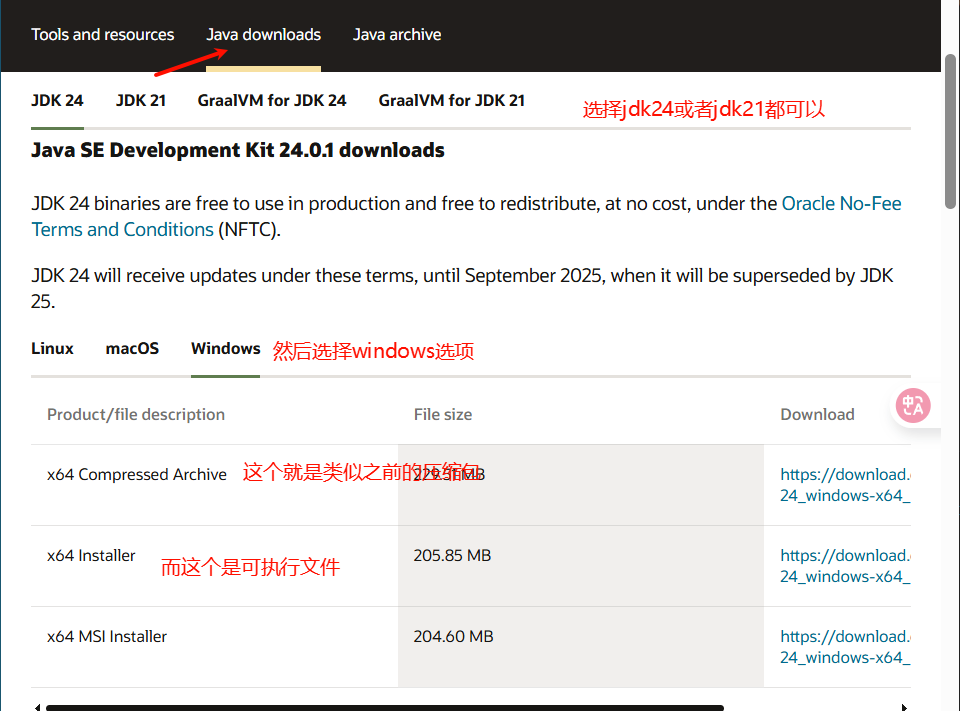
下载压缩包后面步骤与先前的jdk17类似,只要替换环境变量Path以及vscode的javahome路径即可
实在没搞定就把环境变量和vscode的javahome路径都删了,然后下载网页的X64 Installer那个安装包安装大概直接搞定